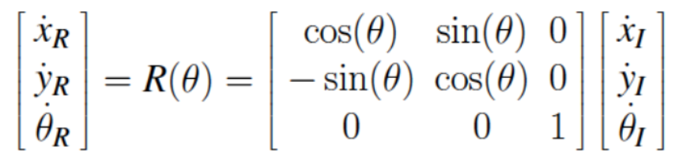

As shown in the figure above, we created a subscriber, but did not get to the publisher part due to problems explained in the issues section.
As shown in the figure above, we created a subscriber, but did not get to the publisher part due to problems explained in the issues section.
In this exercise, we were to learn about ROS and use it to have the duckiebot do a task. Namely, move in a square of side length 1.25 m, and move from the same start and end point as the square but as a circle.
We then used the ROS concepts to build a topic that subscribes to the camera and publishes that data to view the image similar to how the [rqt_image_view] command works.
As shown in the figure above, we created a subscriber, but did not get to the publisher part due to problems explained in the issues section.
What is the difference between your initial robot frame and world frame? How do you transform between them?
The world frame is the given point (0.32, 0.32) and θ = π/2 that is set up in CSC229, whereas the robot frame is (x,y,θ) = 0. To transform between the frames, we use the equation:

How do you convert the location and theta at the initial robot frame to the world frame?
We counted the ticks from the duckiebot's left and right wheels from a starting tick.
Each tick is 1/135 of a full rotation so we were able to use that and the given radius = 0.0318 m to get the location in meters.
Can you explain why there is a difference between actual and desired location?
There can be several factors affecting the actual location and desired location.
The two main reasons for this difference is due to slipping, and hardware to software communication of counting ticks.
A contaminated driving surface can lead to the bot slipping and missing ticks where there should have been.
There could also be error in the tick counter integrated into the bot leading to inacurate distance measurements.
Due to problems explained in the issues section, the remaining questions we could not finish.
There were quite a lot of problems in this lab due to networking problems and failing to connect to the bot. In the total 3 weeks allocated time that we got to work on this lab, we only managed to be able to work on it for about 5 hours. Due to this, we could not finish the lab as me and my lab partner's duckiebots refused to ping its dashboard.
This issue is persistent and inconsistent. One day we can ping its dashboard perfectly fine, but the next day it will not connect. Because of this, most of our lab time was spent on trying to ping the dashboard, failing, restarting the bot, and pinging again to see if it would connect.
At first we believed the issue was with the wifi connection as there has been problems with it in this lab for all the groups. This is why this lab was extended for everyone for a week. However, after the connection was fixed, our bots did not have a connection to the dashboard.
Access to the dashboard was necessary because building and running images uses the command [dts devel build -f -H $BOT.local] where $BOT.local is the dashboard's URL that connects my computer to the bot via wifi. Both my laptop and duckiebot are connected to the duckienet wifi address. Both my laptop and the duckiebot can ping to google.com meaning the wifi is working. However, trying to ping $BOT.local fails. This suggested that the dashboard was sometimes not ready when the bot was ready.

The given screenshot and video shows that our bots were connected to duckienet, and our computers could check the fleet, but our bots weren't showing up because we couldn't get access to its dashboard. We managed to ping google by attaching an ethernet cable to the bot and SSHing into it. This does not require the dashboard to be up. Due to this we as a collective decided to not continue further with this lab as it was very frustrating and we have spent quite a lot of time trying to figure out the problem.